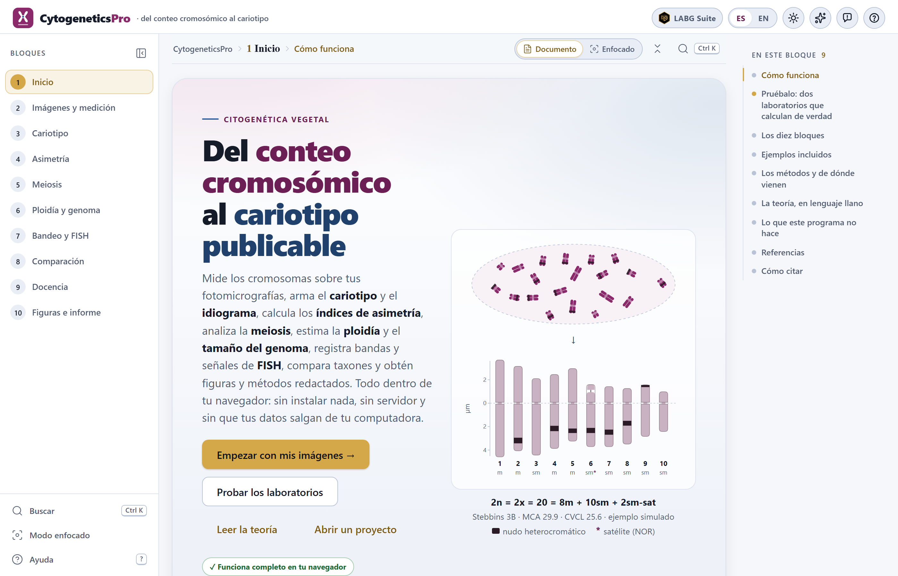
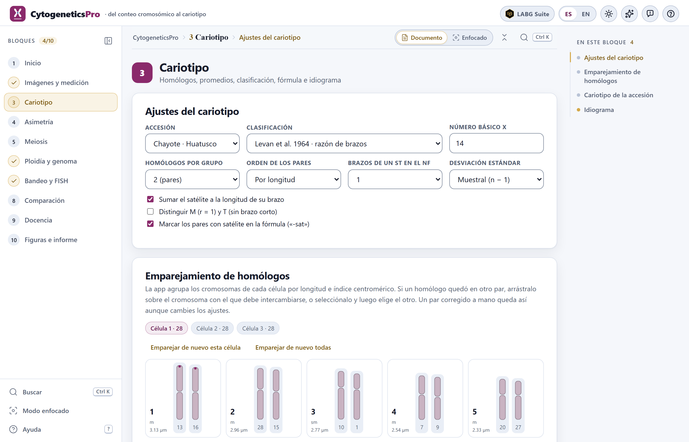
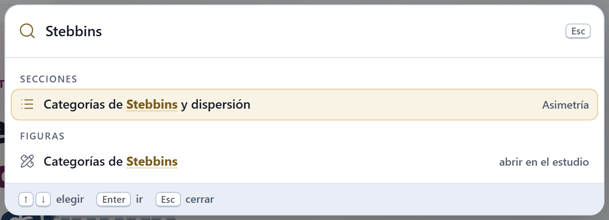
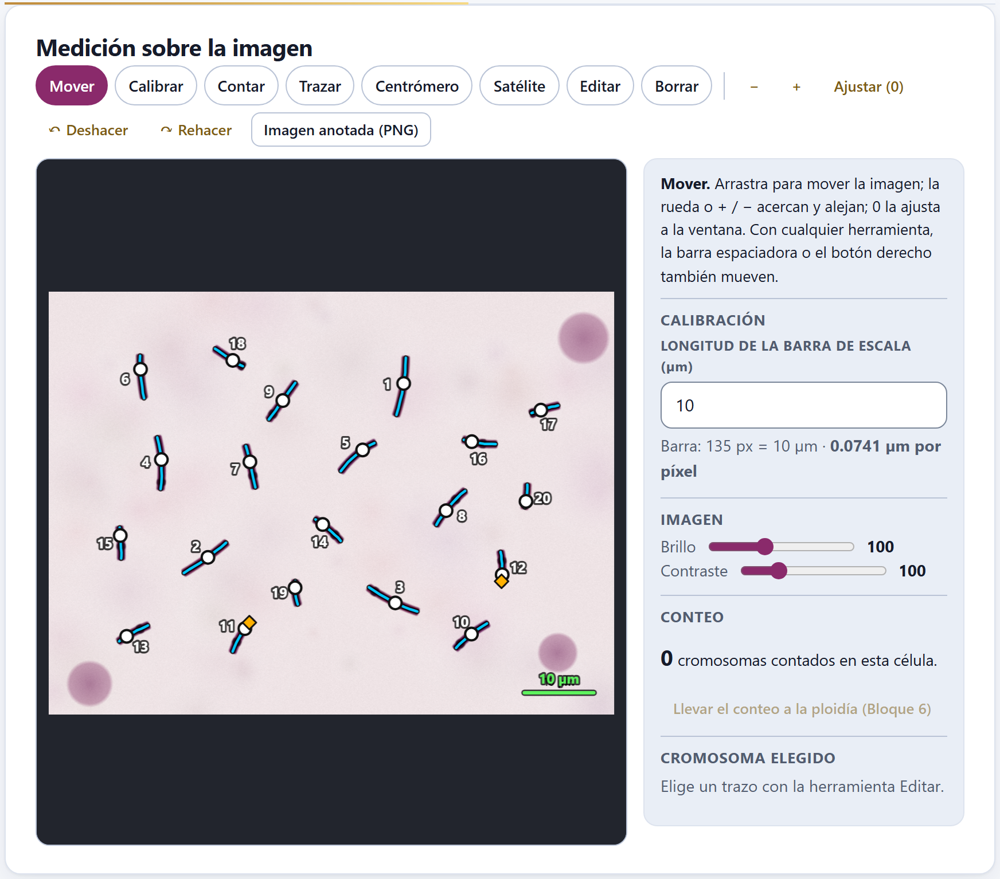
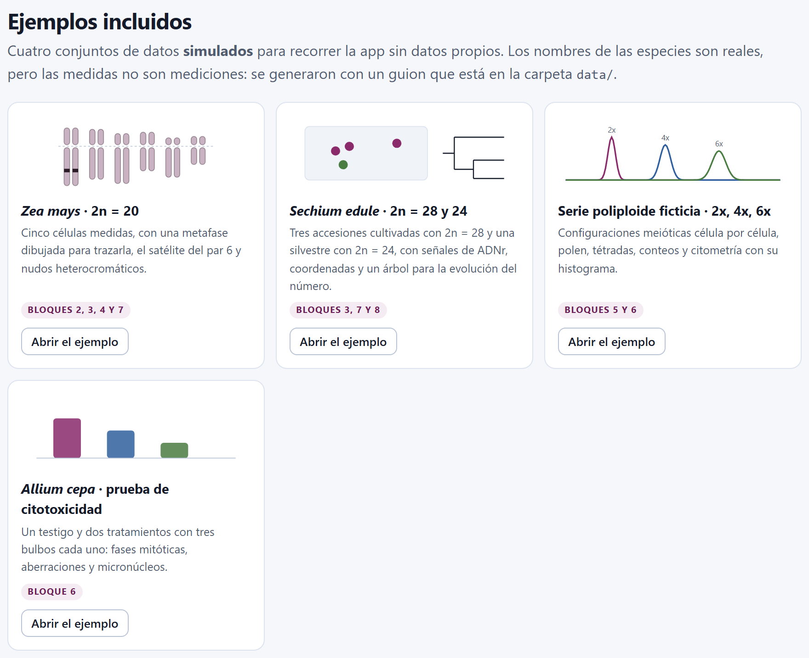
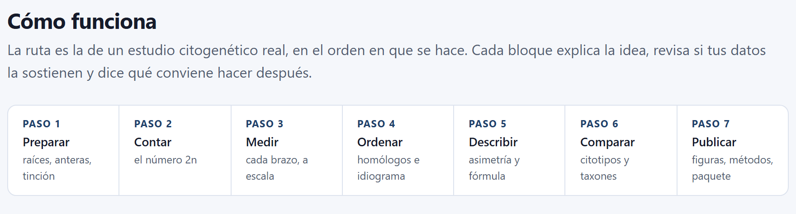

La cita del programa aparece también, lista para copiarse como texto o en BibTeX, en la sección Cómo citar de la portada de la app. El DOI de Zenodo 10.5281/zenodo.23873606 resuelve siempre a la versión más reciente; la versión 1.0.0 tiene además el suyo, 10.5281/zenodo.23873607. Código: https://github.com/luisangelbg/CytogeneticsPro · app en línea: https://luisangelbg.github.io/CytogeneticsPro/.
CytogeneticsPro funciona por completo dentro de tu navegador. Las fotomicrografías, las medidas y los proyectos que abres se leen en tu computadora y nunca se envían a ningún servidor: puedes trabajar con las imágenes de una tesis en curso o con datos sin publicar sin que nada de eso salga de tu equipo. El programa no usa cuentas, no carga nada de internet y no necesita conexión para calcular.
Las ilustraciones, los diagramas y las capturas de pantalla de este manual son originales: se generaron con el propio programa o con código escrito para el manual. Los cuatro ejemplos que se usan en las capturas son simulados: los nombres de las especies y de los lugares son reales, pero las medidas no son mediciones de ninguna preparación ni de ninguna publicación.
El manual sigue el mismo orden que la app: diez bloques numerados que se recorren de arriba abajo en la barra de la izquierda. Cada capítulo explica un bloque y lleva su mismo número —el capítulo 5 es el Bloque 5, y sus secciones y figuras se numeran 5.1, 5.2…—. La introducción no lleva número: sus secciones son I.1, I.2…
Cada capítulo empieza con lo que el bloque resuelve en un estudio citogenético, sigue con lo que hay en pantalla en el orden en que aparece y cierra con las reglas para leer el resultado y los errores más comunes. No hace falta leerlo de corrido: si sólo necesitas un cariotipo con su idiograma, bastan los capítulos 2 y 3; si ya mediste y quieres los índices, el 4. El apéndice B reúne las reglas de todos los bloques.
El color del bloque aparece en la apertura de su capítulo, en el número de cada sección, en la pestaña del borde de la hoja y en el índice, y es el mismo de la franja de la portada.
| Bloque | Nombre en la app | Qué hace |
|---|---|---|
| 1 | Inicio | La lógica de la citogenética en lenguaje llano, dos laboratorios que calculan de verdad, los métodos con su fuente, los ejemplos, las referencias y cómo citar |
| 2 | Imágenes y medición | Calibrar, contar, trazar cada cromosoma y medir sus brazos sobre la fotomicrografía, o capturar y pegar las medidas |
| 3 | Cariotipo | Homólogos, promedios, clasificación, fórmula e idiograma |
| 4 | Asimetría | Los índices, qué mide cada uno y cuáles se recomiendan, con las categorías de Stebbins |
| 5 | Meiosis | Configuraciones, quiasmas, anormalidades, índice meiótico y polen |
| 6 | Ploidía y genoma | Conteos, nivel de ploidía, citometría de flujo y prueba de Allium |
| 7 | Bandeo y FISH | Bandas, fluorocromos y sondas sobre el idiograma |
| 8 | Comparación | Distancias, agrupamiento, componentes principales, evolución del número y citotipos |
| 9 | Docencia | Simuladores, ejercicios, autoevaluación, glosario y prácticas |
| 10 | Figuras e informe | Figuras, tablas, métodos redactados, informe y paquete reproducible |
Aclaraciones y consejos prácticos que ahorran tiempo.
Lo que puede cambiar tus conclusiones si se pasa por alto.
La idea detrás de un cálculo, sin fórmulas innecesarias.
Un caso con los ejemplos incluidos en el programa, con los números que da la app.
| Si el resultado cae en este caso… | entonces esta es la lectura recomendada. |
Son guías para interpretar, no leyes: lo que sabes de la planta, de la preparación y de cómo se midió siempre manda.
Lo que suele fallar al usar el bloque —una célula sin calibrar, un homólogo en el par equivocado, un pico mal elegido— y cómo se arregla.
| Así se escribe | Significa |
|---|---|
| Emparejar de nuevo todas | Un botón, campo o menú de la app, con su texto tal como aparece en pantalla en español. |
| Bloque 6›Histograma del citómetro | Una ruta: abre lo primero y dentro busca lo segundo. |
Ctrl + S, .json | Una tecla, un nombre de archivo o un valor que se escribe tal cual. |
| 2n, x, p, q, r, IC | El número cromosómico somático y el número básico; el brazo corto y el largo; la razón de brazos r = q/p y el índice centromérico IC = 100·p/(p + q). |
| m, sm, st, t | Metacéntrico, submetacéntrico, subtelocéntrico y telocéntrico, según Levan et al. (1964). |
| 2.54 µm · 3.18 pg | Los números se escriben con punto decimal, como los escribe la app, y con la unidad separada por un espacio. |
Un estudio citogenético empieza en el microscopio y termina en una figura y unos números que alguien más tiene que poder revisar: el conteo de 2n, el cariotipo con su idiograma, los índices de asimetría, la meiosis, el nivel de ploidía, el tamaño del genoma. CytogeneticsPro reúne ese trabajo en una sola página, en el orden en que se hace, y dice en cada paso de dónde sale cada número.
Es un programa de citogenética vegetal que corre en el navegador, sin instalar nada. Lleva un estudio del conteo cromosómico al cariotipo publicable: medir los cromosomas sobre las fotomicrografías, ordenarlos, describirlos, compararlos y escribir las figuras y los métodos.
Está pensado para cultivos y sus parientes silvestres —maíz, chayote, frutales, forestales— y para la docencia de la genética. Mide cada cromosoma con una línea que sigue su curvatura sobre una imagen calibrada; empareja los homólogos y promedia las células; clasifica cada par por la posición del centrómero y escribe la fórmula cariotípica; calcula doce índices de asimetría con las categorías de Stebbins; analiza las configuraciones meióticas y las compara con lo esperado para un autopoliploide o un alopoliploide; estima el nivel de ploidía y el tamaño del genoma por citometría de flujo; registra bandas y señales de hibridación in situ sobre el idiograma; y compara cariotipos entre taxones, con la evolución del número cromosómico sobre un árbol.
Todo se calcula con un motor escrito desde cero para este programa, sin bibliotecas de otros, y cada método cita el trabajo que lo define: en la portada de la app, en las notas de cada bloque y en los métodos que redacta el Bloque 10.

Una buena manera de saber si el programa te sirve es ver qué preguntas contesta, y en qué bloque.
| Pregunta | Bloque |
|---|---|
| ¿Cuánto mide cada brazo de cada cromosoma en mis fotomicrografías? | 2 |
| ¿Cuántos cromosomas tiene esta célula, y cuál es la moda de 2n en la accesión? | 2 6 |
| ¿Cuáles son los homólogos, de qué tipo es cada par y cuál es la fórmula cariotípica? | 3 |
| ¿Qué tan asimétrico es el cariotipo, y en qué categoría de Stebbins cae? | 4 |
| ¿Cuántos quiasmas hay por célula? ¿Es regular la meiosis? ¿Qué tan viable es el polen? | 5 |
| ¿Las configuraciones meióticas son las de un autopoliploide o las de un alopoliploide? | 5 |
| ¿Qué nivel de ploidía tiene la planta, y cuánto ADN hay en su núcleo? | 6 |
| ¿Es citotóxico un extracto? ¿Baja el índice mitótico, aumentan las aberraciones? | 6 |
| ¿Dónde caen las bandas y las señales de FISH, y se repiten de una célula a otra? | 7 |
| ¿Qué tan parecidos son los cariotipos de varios taxones? ¿Cómo cambió el número cromosómico en el árbol? | 8 |
| ¿Cómo enseño la mitosis, la meiosis y el cariotipo con ejercicios que se califican solos? | 9 |
| ¿Cómo publico el idiograma, el cariograma, las tablas y los métodos? | 10 |
Todo lo que sigue descansa en seis ideas. Si te quedas con ellas, buena parte de los errores que se cometen al describir un cariotipo ya no son posibles.
El punto de partida son las fotomicrografías de metafases, o las medidas de los brazos si ya las tienes. Los demás bloques reciben sus propias tablas —configuraciones meióticas, conteos, citometría, señales—, que se escriben, se pegan desde una hoja de cálculo o se abren en CSV.
| Entra | Formato y dónde |
|---|---|
| Fotomicrografías | Imágenes .png y .jpg; cada una abre una célula (Bloque 2) |
| Medidas de los brazos | Capturadas a mano o pegadas de una hoja de cálculo o de un artículo: columnas reconocidas por su nombre o por su orden, con tabulador, punto y coma o coma (Bloque 2) |
| Tablas de los bloques | Configuraciones, fases, tétradas y polen (Bloque 5); conteos, citometría y la prueba de Allium (Bloque 6); señales (Bloque 7): escritas, pegadas o en .csv |
| Histograma del citómetro | Un .csv o .txt de canales o de eventos (Bloque 6) |
| Árbol y contorno | Un árbol en Newick o NEXUS y, si se quiere, un contorno .geojson para el mapa de citotipos (Bloque 8) |
| Proyectos | Un .json guardado antes por la propia app, con sus imágenes (Ctrl + S para guardar, Ctrl + O para abrir) |
| Sale | Formato |
|---|---|
| Figuras | Idiogramas, cariograma recortado de la imagen, categorías de Stebbins, MCA × CVCL, histogramas, dendrograma, biplot, árbol con los números y mapa, en SVG o PNG; también por el estudio de figuras de la suite |
| Tablas | Todas las del proyecto en CSV o TSV, listas para una hoja de cálculo |
| Texto | Los métodos redactados en español o en inglés con sus referencias, y un informe imprimible o en HTML |
| La imagen anotada | La fotomicrografía con los trazos, el centrómero y los números, en PNG a su resolución original |
| Paquete | Un .zip reproducible con el proyecto, el informe, los métodos, las tablas y las figuras |
Sólo un navegador moderno, en una versión de los últimos años. No hace falta instalar nada ni tener internet; el programa entero cabe en una carpeta.
index.html. Es lo más sencillo y funciona igual que todo lo demás: los cálculos y los ejemplos están dentro del programa.Open CytogeneticsPro.bat. Abre un servidor local mínimo en el puerto 9900 y la app en http://localhost:9900. Sólo hace falta para abrirla desde otro equipo o una tableta de la misma red; el archivo server.ps1 explica cómo.Las preferencias —el idioma y el tema claro u oscuro— se guardan en el propio navegador y se recuerdan la siguiente vez. Los datos no: cada vez que abres la app empieza vacía, y para retomar un estudio está el proyecto .json, que guarda también las imágenes. Si intentas cerrar la pestaña con datos sin guardar, la app te lo advierte.
El proyecto guarda las fotomicrografías dentro del .json, así que su tamaño crece con ellas. Conviene recortar cada imagen a la metafase y guardarla en PNG o en JPG de buena calidad antes de abrirla: la medición no gana nada con los bordes vacíos de la fotografía.
Todas las aplicaciones de la suite comparten la misma barra, la misma navegación y las mismas herramientas de figuras, así que lo que aprendas aquí te sirve en las demás.
A la izquierda está la barra de los diez bloques; a la derecha, la lista En este bloque, con las secciones del bloque abierto. Al pie de cada bloque dos botones llevan al anterior y al siguiente. Cuando cambias un control y los resultados se recalculan más abajo, aparece un botón flotante, Último cambio, que te regresa al control que tocaste, y otro para Volver arriba. Casi todo se puede hacer también desde el teclado:
| Tecla | Qué hace |
|---|---|
Alt + ← · Alt + → | El bloque anterior o el siguiente; en el modo enfocado, la sección anterior o la siguiente |
Ctrl + K | Buscar un bloque, una sección, un control o una figura |
Ctrl + S · Ctrl + O | Guardar el proyecto en un .json · abrir uno guardado |
[ · ? | Contraer la barra de bloques · ver la lista de atajos |
V C N T M S E B | En el editor del Bloque 2: Mover, Calibrar, Contar, Trazar, Centrómero, Satélite, Editar y Borrar |
Ctrl + Z · Ctrl + Y | En el editor del Bloque 2: deshacer y rehacer |

1 2 3 4 5 6 7 8 9 10 11 12?).[ la contrae.Ctrl + K). Un bloque, una sección, un control o una figura, por su nombre.
Ctrl + K) con «Stebbins» escrito: encuentra la sección Categorías de Stebbins y dispersión del Bloque 4 y la figura del mismo nombre, que se abre en el estudio de figuras. Enter lleva al resultado elegido.El Bloque 2 es el único que trabaja sobre una fotografía. Su editor tiene una herramienta por tarea —Mover, Calibrar, Contar, Trazar, Centrómero, Satélite, Editar y Borrar—, cada una con su tecla de una letra, y al lado un panel que explica la herramienta activa, la calibración, el brillo y el contraste y el conteo. El capítulo 2 lo recorre paso a paso.

Todas las figuras de la app se pueden abrir en el estudio de figuras, una ventana común a la suite donde se cambian los textos, el tamaño de la letra, la leyenda y los colores sin tocar los datos, y se exporta a los anchos y resoluciones de las revistas. Junto a cada figura, el botón ✎ abre el editor de la figura, para cambiar sus textos, sus colores y su leyenda. Los botones SVG y PNG de los bloques escriben siempre los colores del tema claro, aunque estés trabajando en el oscuro. El capítulo 10 lo explica a fondo.
Para aprender sin datos propios, la app trae cuatro conjuntos simulados. Los nombres de las especies y de los lugares son reales, pero las medidas se generaron con un guion propio a partir de cariotipos base escritos a mano con valores redondos: sirven para recorrer la app y para las pruebas, no para describir a esas especies. Se abren con Abrir el ejemplo en Bloque 1›Ejemplos incluidos, o desde los bloques que los usan, y cada uno lleva al bloque donde empieza.

| Ejemplo | Abre en | Qué tiene y para qué sirve |
|---|---|---|
| Zea mays, 2n = 20 | 2 | Un maíz criollo de Texcoco con cinco células: la primera es una metafase dibujada por la app, con sus trazos, el satélite del par 6 y los nudos heterocromáticos; las otras cuatro, medidas directas. Medición, cariotipo, asimetría y bandas. |
| Sechium edule, 2n = 28 y 24 | 3 | Tres accesiones cultivadas de chayote (Huatusco, Chilchotla y Uruapan) y una silvestre con 2n = 24, tres células cada una, señales de ADNr 45S, 5S y CMA⁺, coordenadas y un árbol ilustrativo de cucurbitáceas. Cariotipo, FISH, comparación y evolución del número. |
| Serie poliploide ficticia, 2x, 4x y 6x | 5 | Una especie inventada con x = 7 y tres poblaciones: configuraciones meióticas célula por célula, fases, tétradas, polen, conteos y citometría con el histograma del tetraploide. |
| Allium cepa, prueba de citotoxicidad | 6 | Un testigo y dos concentraciones de un extracto ficticio, tres bulbos por tratamiento y 1000 células por bulbo: índice mitótico, fases, aberraciones y micronúcleos. |
Cómo se simuló cada ejemplo —los cariotipos base, el modelo de error de medición, la semilla— está escrito en data/LEEME.md, junto al guion que los genera. El ejercicio de cariotipo del Bloque 9 no usa estos ejemplos: inventa una metafase nueva cada vez.
Los bloques están en el orden de un estudio citogenético real. No hace falta pasar por todos: los que no apliquen se saltan, y cada bloque dice si conviene volver a uno anterior. La sección Cómo funciona de la portada lo resume en siete pasos.

Lo que mides en el Bloque 2 lo usan el 3 y, a través del cariotipo, el 4, el 7, el 8 y el 10; el conteo de una célula se lleva al Bloque 6 con un botón. Si cambias una medida o abres otro proyecto, cada bloque recalcula lo suyo la siguiente vez que lo visitas, y su palomita en la barra se apaga si deja de tener resultado.
Un programa de cálculo vale lo que valen sus números. Los índices de asimetría se compararon con los ejemplos publicados por Peruzzi y Eroğlu (2013) y con los cariotipos ideales de Zuo y Yuan (2011); los motores de la app se recalcularon, aparte, con fórmulas escritas de nuevo en un lenguaje de cálculo estadístico independiente, sobre 81 cariotipos —incluidos casos difíciles, con telocéntricos y brazos iguales—.
Las pruebas sirvieron también para encontrar errores y decisiones mal tomadas, y quedaron documentados: por ejemplo, que en la tabla de Stebbins (1971) la columna se define por la proporción de cromosomas con razón de brazos menor que 2, o que el índice DI usa medianas y no medias (Lavania y Srivastava, 1992). Los capítulos dicen, donde importa, qué convenio sigue la app y por qué.
Saber dónde termina una herramienta es tan útil como saber qué hace. La portada de la app lo dice en Lo que este programa no hace:
| No hace | Por qué, y qué hacer |
|---|---|
| Reconocer cromosomas solo | Tú trazas cada cromosoma; la app mide con exactitud lo que trazas, sin segmentación automática. Así sabes siempre qué se midió. |
| Controlar el microscopio o el citómetro | Lee las imágenes y los archivos de texto que exportan, nunca los equipos. |
| Modelos de verosimilitud | La evolución del número cromosómico se reconstruye por parsimonia con costos por evento, no por máxima verosimilitud. |
| Mapas con capas ajenas | El mapa de citotipos se dibuja sobre una retícula de coordenadas; puedes cargar tu propio contorno. |
| Saber lo que no está en el proyecto | Los métodos redactados son un borrador: la app no conoce el material de campo, el microscopio ni el número de plantas, y así lo dice el Bloque 10. |